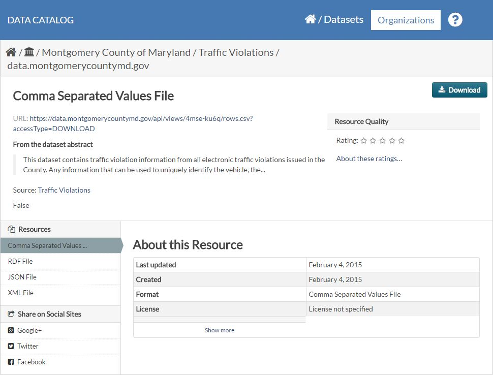
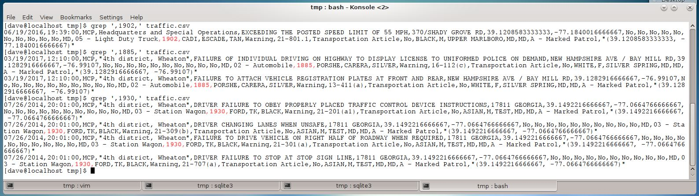
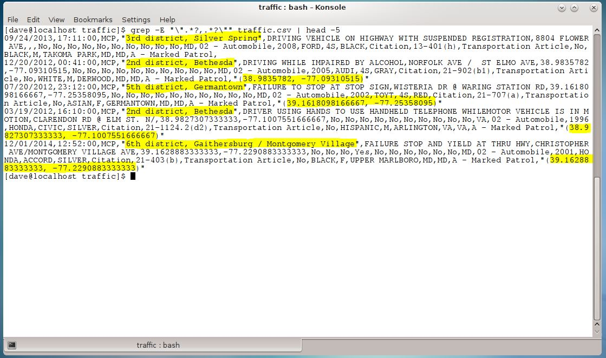
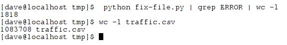

head command revealed a header row and some variety in the data encoded in the file.

Data.gov has a catalog of over a 160,000 data sets that are available for anyone to work with. The state Maryland contributed a collection of traffic violation data. This data looked like it would be a useful tool to shed light on a commonly held belief, that more tickets are issued at the end of the month in order for officers to 'meet quota'. The MD Traffic Data did shed light on that question, but it also raised a few more.
Data.gov provides a little information about each dataset. In this case the CSV file reportedly "contains traffic violation information from all electronic traffic violations issued in the County".

After downloading and renaming the file the next step was to check it's contents and load it up into an SQLite database.
It is about 375MB in size has just under 1.1 million rows, so lots of data to work with! The linux head command revealed a header row and some variety in the data encoded in the file.
Running a few checks with grep highlighted some problems with the data. The file was uploaded in 2015, but the year field contained a thousands of entries with bad dates. There were missing dates, early dates and late dates. Rather than drop rows with improbable dates, where clauses were added to the SQL queries to restrict the results to dates that were at least plausible.

There were other problems with the raw data. This was a CSV file but commas were used within fields as well and as a field seperator. In some instances the sub-agency (usually a geographic designation) had a comma in its name. Other fields occasionally had internal commas. When present, the geographic coordinates were given as "(latitude, longitude)"

More troubling than the inconsitent use of internal commas, many rows were missing significant numbers of fields altogether. Rather than trying to guess what data was present in these cases, the rows with missing fields were just dropped. Here is the script that was used to set up the database, clean the incoming lines from the CSV file, and then insert the rows into the database. After cleaning up the file, all but 1818 rows (about .1%) were successfully imported into the database.
